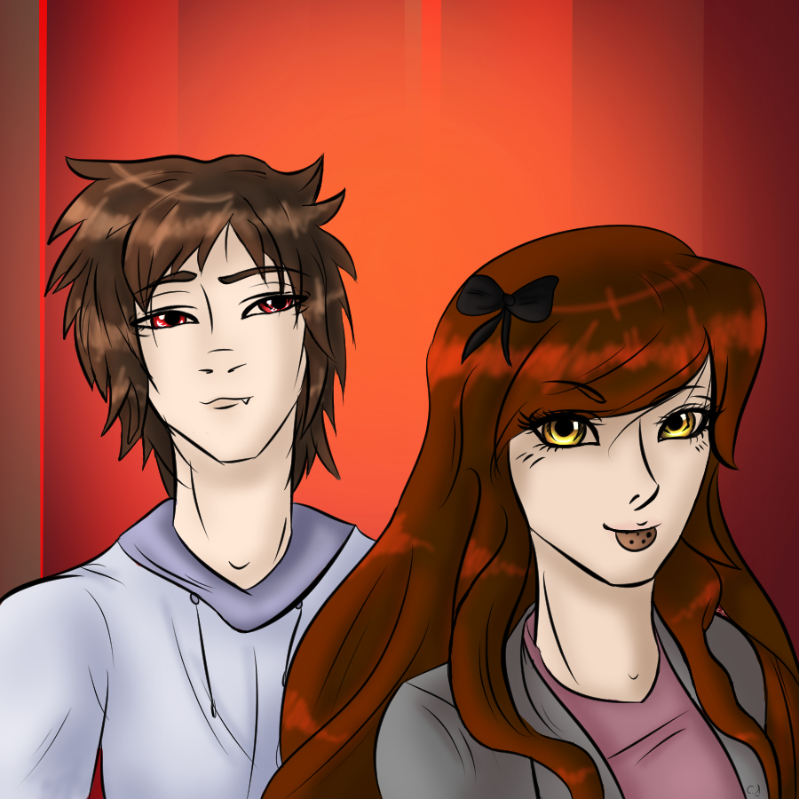

"Y'know, I love the robots as if they're my family. And you help family, so why should I not help them?"
Song: "Ones and Zeroes"
Title: Cookie Queen
Full Name: Sugar Marie Twilight
Nicknames: Sugi (Self proclaimed), Heroes of Replay (Isabelle), That Girl (Bonnie(Human)), Ms/Manager Sugar(animatronics), Puppet (PM), "Salt"(Disguise), "Marie" (William Afton, Others (Name unknown))
Age: 20
Birthday: August 25
Height: 5'6
Race: Ability Mystic (Strings, Shapeshifting) and Creature Mystic (Werewolf)
Status: Alive but distressed
Current Appearance: Brown hair with Brown eyes, Pink Blouse matched with Tan Jacket, Gray Zippered-Up Jumper with a Pink Shirt, Red Converse, Brownish Orange Fur Color
Mask Visage: A Marrionette mask
Hobbies: Eating Cookies, Reading, Mechanics, getting traumatised.
Skills: Psychic Strings (Fully controlled by her), Good at Dancing-ish, Can Make Villains Monologue
Strengths: Can create cookies that has many useful properties (Such as healing), Supportive toward others even if she may not understand, Headstrong
Weaknesses: Can get easily distracted (Even in dangerous situations), Childlike obliviousness and can't control her anger very well.
Likes: Landon, Pizza, Video games and dancing. Oh and of course cookies.
Dislikes: Bugs (from a phobia), Anyone insulting her or her friends, The health inspector and being reminded of what happened in her coma. At this point, pretty much every single stranger from her new trust and seperation anxiety from the recent "plots".
A carefree spirit who does what she wants, when she wants. Has a hidden past that's kept secret except to one other person.
Eren (Positive)
Eren is Sugar's adoptive sibling. She is the one who rescued Eren from his disappearance and they now run the Pizzeria together. Eren isn't too social so Sugar is the one who deals with interpersonal relationships and really deals with the big stuff in the Pizzeria. Eren is the one who manages the stuff that happens behind the scenes and problems among the staff, mainly the animatronics. Practically inseperable and rely on each other for support throughout tough times. They always accompany each other on adventures.
Landon (Positive)
Sugar's boyfriend. Landon was just a normal epic gamer who happened to be at the right place at the right time. Met with Sugar as a witness at a crime scene who was just playing games. They ended up connecting and started hanging out where Landon soon became apart of the group's antics that changed his life forever. Mainly because he's a vampire now. But it's not like he sees the sun on a normal basis. They are quite close considering they are dating now, and they've saved each others lives a few times so they're kinda stuck with each other. Her lap is Landon's 'gaming setup'. They are extremely comfortable together, and don't get them drunk unless you are okay with watching two hormonal people get at each other with no inhibitions.
Valentine (Positive)
Valentine is a best friend to Sugar.
Ven (Negative)
After Ven introduced himself under false pretences as a magazine interviewer and then trapped her and Landon in a springlock suit, soon attempting to kill her friends as he tried to use her for genocide you'd expect she'd feel betrayed. Of course she does, when Eren killed him the first time she felt so relieved. But after seeing the chance he is alive afterwards she starts to hate him again, naturally. Then after the predicament with Lucille, it's revealed he was the one who wanted her there and soon after he starts to dance with her, forcing her to dance along with him. Then he goes after Val and Eren (Who are trying to rescue her), he gets stabbed by Eren so at least he won't be coming back. Damage is still done though.
Lucille (Negative)
Lucille was the lady who helped her in the club after she got drink spilled down her, and she quickly started trusting her, before after a few days she was influenced to go to a meeting that seemingly had the way to fix Replay from it's corruption. But as soon as Sugar woke up afterwards, tied to a pole with silver handcuffs and a shock collar, all the trust faded. Especially after Lucille tried to tell her Landon cheated on her, which made them both extremely mad, so Landon killed Lucille. Naturally. So she's dead, but Sugar still hates her guts.
Varine (Negative)
Varine is the brother of Lucille who kidnapped her, bound her in ties and a silver chain around her neck and he was the one who intended to kill her, Eren and Val. She despises him because he treated her the harshest out of the 3 of them since he put shock bracelets on her (and he used them repeatedly) and then put a cloth on her mouth so she couldn't speak. He also made a few..strange comments about her and in the end she was the one to kill him after she submits to her instincts in defence of the others. She now hates to hear him mentioned because he's the one that has driven her to a point where she's vowed to never shift to wolf again, and she's attempting to hide her werewolfness as best she can solely because of the savage way she killed him.
Gorge (Positive)
Sugar isn't very familiar with Gorge except he's a confusing alive skeleton man that is similar to funny internet skeleton and he kinda brought her back from the dead.
Luna (Postive)
Grace (Positive)
Grace is a friend to Sugar. Adventuring and Gaming Partner.
Min (Positive)
One of Sugar's employees. Possibly the only female. Has a professional relationship between them but Min is slowly warming up to her. Sugar also sticks up for Min whenever she is insulted or picked on by the other chefs.
Marie (Positive)
Marie was a girl who was trapped in a jumanji like world for years and ended up believing she was apart of it. When she met Sugar and the others in the world she decided to stick with them. In the end, Marie is convinced by Eren to come with them through the portal and it reveals her true nature of actually being apart of the real world. She ends up living with the others as she doesn't know what happened to anybody in the last 6 years.
- One of the two OG characters with the other being Eren
- Spooned a Puppet in an Alleyway (Kaitlyn don't question that her words not mine)
- Submitted to a girl, Platonically, in a fight (Don't question that either)
- Is basically how irl Sugar copes B)